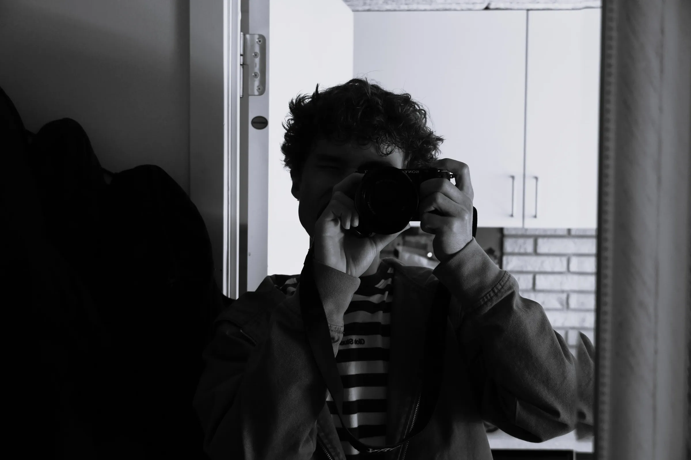
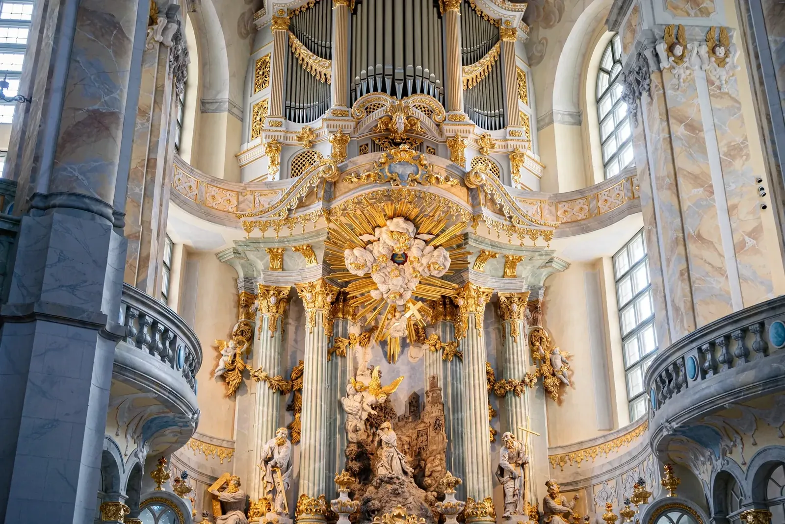

Mød Valdemar Kure Lundskov
Jeg har altid været fascineret af det visuelle — især hvordan et billede eller en video kan fortælle noget, uden at man behøver sige ret meget.
Jeg arbejder primært med foto, video, idéudvikling og produktion. Jeg kan godt lide hele processen fra den første idé til det færdige resultat, og jeg går meget op i, at det endelige content ikke bare ser godt ud, men faktisk passer til det brand og den historie, det skal repræsentere.
Jeg arbejder bedst, når der er plads til at tænke kreativt, prøve ting af og finde en løsning, der føles anderledes end det forventelige. For mig handler godt content om stemning, detaljer og autenticitet — og om at skabe noget, man husker.
Jeg kan især godt lide produktioner, hvor man ikke behøver overgøre det visuelle for at få noget til at fungere. En god idé, den rigtige timing og et skarpt blik for detaljerne kan ofte gøre mere end en masse effekter. Derfor prøver jeg altid at finde det udtryk, der passer naturligt til projektet og menneskene bag.
Instagram — @kurevisualsMød Basharat Ullah Dar
Jeg arbejder med foto, video, redigering og instruktion og brænder især for at skabe et stærkt visuelt udtryk fra idé til færdig produktion.
Jeg ser kameraet som mere end bare et værktøj. Det handler om at finde den rigtige vinkel, bevægelse, stemning og fortælling, så contentet føles levende og har en klar identitet.
I BK Studio er jeg med til at udvikle idéerne, instruere og forme det visuelle udtryk. Jeg går op i detaljerne og i at få produktionen til at føles naturlig — samtidig med at der er en tydelig tanke bag.
Jeg tror på, at det bedste content opstår, når idé, mennesker og det visuelle udtryk arbejder sammen.
Jeg går meget op i, at en produktion både skal være gennemført og rar at være en del af. God kommunikation og en klar idé gør det lettere at skabe billeder og videoer, der føles ægte, samtidig med at de har et professionelt udtryk.
Instagram — @photo.basharatMød resten af holdet

Hvem står bag?
Om BK Studio
BK Studio er et kreativt studio inden for foto, film og visuelt content, skabt af Basharat Ullah Dar og Valdemar Kure Lundskov.
Vi startede BK Studio, fordi vi gerne ville skabe noget sammen. Noget, hvor vi selv kunne stå bag kameraet, være en del af idéen og følge projekterne hele vejen fra første tanke til det færdige resultat.
Vi arbejder med foto, video og content, men det vigtigste for os er altid det samme: at skabe noget, vi selv har lyst til at se. Nogle projekter er store. Andre er små. Det ændrer ikke på, hvor meget vi går op i dem.